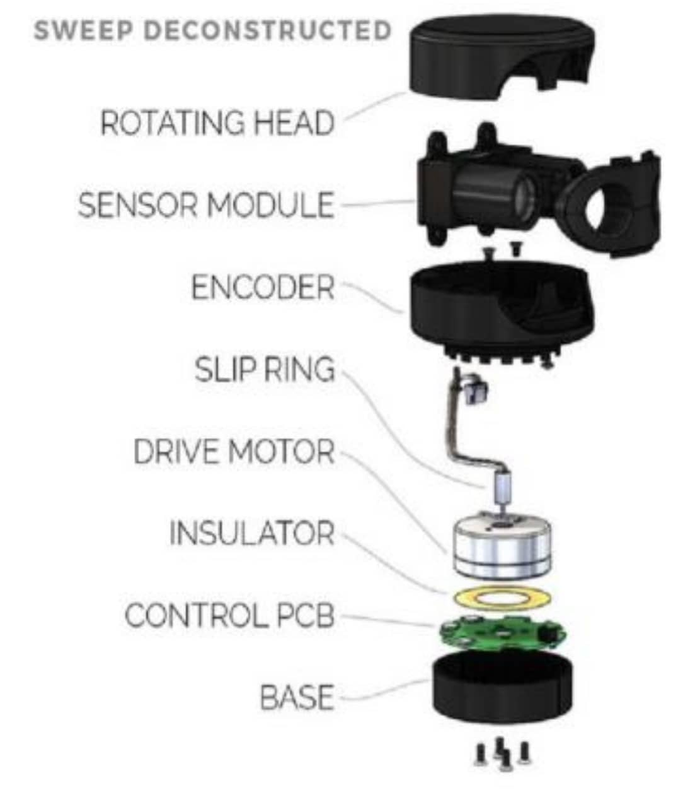

What is LiDAR?
LiDAR (Light Detection and Ranging) is a sensor that uses laser pulses
to measure distance. It is commonly used in drones for obstacle detection,
terrain mapping, and autonomous navigation.
How LiDAR Works
The LiDAR sensor emits laser pulses toward objects. It measures the time
taken for the laser to reflect back. Using this time-of-flight measurement,
it calculates the distance to the object.
By continuously scanning the environment, LiDAR can create accurate
3D maps of surroundings.
Key Parameters
- Range: Maximum distance it can measure
- Accuracy: Precision of distance measurements
- Scan rate: Number of measurements per second
- Field of view: Area covered by the sensor
Types of LiDAR
- 1D LiDAR: Measures distance in one direction
- 2D LiDAR: Scans in a horizontal plane
- 3D LiDAR: Creates full 3D environment maps
Typical Use Cases
- Obstacle avoidance
- 3D terrain mapping
- Autonomous navigation
- Infrastructure inspection
Selection Tips
- Choose longer range LiDAR for outdoor drones
- Use lightweight LiDAR for small drones
- Select higher scan rates for fast-moving drones
Common Mistakes
- Using heavy LiDAR on small drones
- Ignoring power consumption
- Mounting LiDAR with obstructed field of view